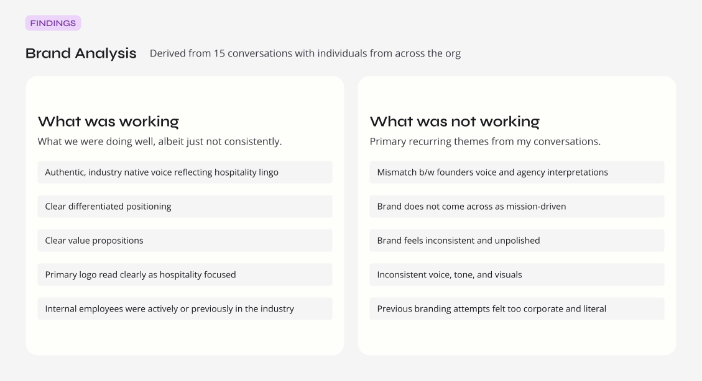
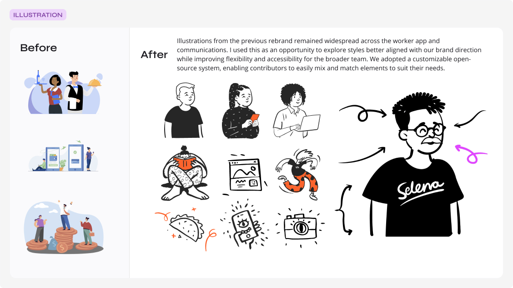
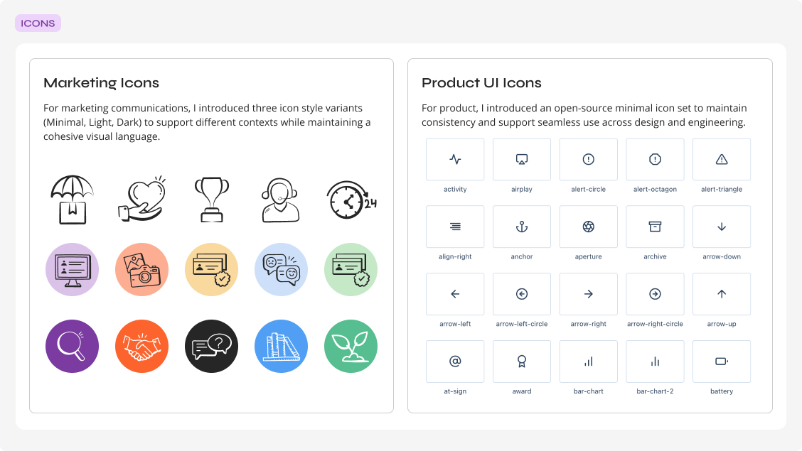

Gigpro → Qwick
Scaling design through growth & acquisition

Overview
Gigpro, now Qwick, connects experienced food and beverage professionals with hospitality businesses. When I joined in 2022, the company lacked a cohesive identity, and product and marketing experiences were disconnected from each other. I led brand design through early growth, product scaling, and through to the 2025 merger with Qwick, building and operationalizing the systems needed to support our rapid growth.
As Gigpro scaled, design lacked clear ownership and consistency across product and marketing. Teams worked without a shared visual system, which created fragmented experiences and slowed both quality and delivery. Two prior rebrands had left product and marketing surfaces inconsistent. Without a clear, differentiated point of view, the brand struggled to stand out in a competitive market.
The 2025 Gigpro–Qwick merger added a second challenge: bringing together two platforms and brands into one product experience without disrupting growth.
What I did
Unified the design system across product and marketing
Built on the existing design foundation to create a more complete, end-to-end system across product and marketing. Expanded reusable components, patterns, and guidelines to better express and unify the brand, create more consistent experiences, and help teams deliver features more efficiently.
Integrated teams and tools after acquisition
Led the design-team and tooling integration following the merger, bringing together multiple design practices, workflows, and systems. Established shared ways of working and a governance model that reduced fragmentation, clarified ownership, and stabilized delivery during a period of change.
Extended the system as the company scaled
Designed and shipped new features across teams and product contexts while evolving the system to support new needs. This ensured new work remained consistent with the broader experience and made the design foundation more flexible as the organization grew.
Impact highlights
- Supported marketplace growth: Delivered product features, brand evolution, and marketing design infrastructure during a period when revenue grew 278% to $15.5M and paid gigs increased 299%.
- Supported product discovery, prototyping, and concept validation for emerging AI features.
- Established a scalable design foundation: Evolved the existing design system across product and marketing, expanding reusable components, patterns, and guidelines to improve brand consistency and support faster feature delivery.
- Enabled a smoother post-merger integration: Helped bring Qwick's brand and product features into the experience during the 2025 merger, using the established foundation to avoid a full rebuild.
Brand Audit
Uncovering the problem
I spent my first two weeks at Gigpro (now Qwick) on what I call “the work before the work”: getting rooted in historical context and discovery to inform where the brand and product needed to go next. I scheduled conversations across teams and leadership to understand how people saw the brand, the product, and our customers, and how those perceptions impacted their day-to-day.
This gave me a clear picture of which parts of the brand experience were working, which felt disconnected, and where misalignment was creating friction across departments. It also surfaced how past decisions, including two prior rebrands and rapid growth, were impacting roles, workflows, and the customer journey.
In parallel, I audited how Gigpro showed up in the world: interviews, articles, internal docs, social channels, and past rebrands. I wanted to understand how the public was experiencing the brand in the wild.

Fifteen conversations across the org surfaced a clear split between what was working and what wasn't.

Internal feedback described the 2019 rebrand (shown above) from SideGig to Gigpro as overly stocky, corporate, and very enterprise SaaS. It missed the mark in expressing the mission in an authentic way. A 2021 rebrand followed.

This version was better received but described as slightly generic, too literal, and not mission-oriented. Feedback also cited inconsistent brand interpretations across marketing and product surfaces and legacy brand styling still present on the business platform.
During stakeholder interviews, I asked everyone to share three words describing how they wanted customers to think and feel when using our products. I distilled those responses into four core themes, creating a shared lens the organization could use to make decisions. Instead of getting stuck on individual design or technical details, teams could ask, “Does this feel effortless?” “Does this feel trustworthy?” and align execution to those pillars.

Four themes, distilled from fifteen interviews across six teams, became the shared lens for brand decisions.
Design Direction
Improve the ingredients and adjust the recipes
Through interviews and research, I found that Gigpro's brand itself was not the problem; inconsistent interpretation and execution were. That gap showed up most clearly in the generic, uneven application of brand elements across product and marketing.
Although Gigpro was on its third brand iteration in four years, the audit didn't justify a fourth. Sentiment toward the identity was neutral rather than negative, and the logo had already tested well for communicating the mission and industry. I recommended preserving the core identity, strengthening the foundational system, and pairing that with team education and support to improve application instead of defaulting to yet another rebrand.
With that direction established, I focused on improving the quality of the ingredients: editing, refining, and supplementing the design foundations based on what I learned about the business.
Color
30 colors to 23
I identified 30 active colors across product and marketing surfaces, including legacy colors from previous rebrands. The overlap created brand fragmentation and operational inefficiency. I streamlined the system by removing redundancies, introducing semantic token naming, and defining a replacement map for engineering to ensure consistent implementation across the product. From that point forward, every color had a defined role; if it didn't, it was removed.

Streamlined the palette to remove redundancies, clarify usage, and add tints for flexibility.
Typography
16 weights to 3
The original brand guide included two fonts with 16 total weights. Without clear usage rules, contractor applications varied widely. After reviewing marketing collateral and identifying which weights were actually needed, I reduced the set to four core weights, added one handwritten style, and provided a type stack example with light documentation to guide consistent use.

An example from the guide showing how the reduced type stack was meant to be used in a marketing application.
Photography
From ad-hoc photo selection to a stylized photo bank
Photos were the primary medium for visual expression across marketing surfaces, but the existing direction lacked a cohesive style. It felt generic: fragmented, overly staged, and disconnected from the warmth and diversity of the hospitality industry.
I responded by curating an image bank of nearly 500 royalty-free, photojournalistic-style photos that were more authentic to the industry. The photos were action-oriented, dynamic, and diverse. I created a custom Adobe Lightroom preset to standardize the look and feel, organized the library by segment, audience, and topic, and added guidance to support consistent image selection.

A curated bank of nearly 500 photos replaced ad-hoc, disconnected image selection.
Illustration
Sourcing a style for the worker experience
Illustration faced the same challenges as the brand's photography, feeling generic and lacking distinction. After exploring multiple directions with the founder to ensure the visuals reflected the true spirit of the brand, I selected a customizable open-source library that could flex across both product and marketing surfaces. I then established clear usage guidelines and example applications to ensure consistency across collateral. Illustration became the primary visual medium for worker-facing communications.

A customizable, open-source illustration system replaced illustrations left over from the previous rebrand.
Icons
Creating a consistent but flexible system across brand and product
The brand's icon treatment was inconsistent across marketing and product, with styles varying widely between applications. To create more cohesion, I introduced a modern, flexible open-source icon set and defined scalable style treatments and usage rules for key contexts such as email, in-app notifications, and other product and marketing surfaces.

Marketing icons and product UI icons were unified under one flexible, scalable system.
Operationalizing Design
Building the cookbook
After refining the core ingredients of the brand, I partnered with marketing managers and C-suite leaders to understand the most common and critical use cases across external and internal communications, including campaigns, sales collateral, internal presentations, and board decks. With that context, I folded the foundations into new templates tailored to Gigpro's specific needs. These templates supported scalable cross-channel use and enabled contributors with different skill levels to produce consistent, on-brand work.

A centralized Canva brand hub let non-designers create scalable, on-brand social content.

Modular email components let the marketing team swap pieces without losing brand consistency.
Translating the Brand Across the Product Experience
Systematizing UI across platforms
I established a global design system and then tailored specific libraries for the marketing website, business web app, and worker mobile app. From there, I partnered with engineering to map the updated brand direction into customer-facing experiences across each product surface.

Rebuilt in Contentful, pre-designed modules gave marketing partners autonomy without engineering handoffs.

Design system snapshot and sample applications of applied styles across the web application.

Core components, semantic tokens, and representative screen applications from the mobile app.
The Merger with Qwick
How design was able to evolve combining 2 businesses into one
As Gigpro grew, the design foundation proved durable enough to support a major business pivot. In early 2025, Gigpro and Qwick merged and adopted the Qwick brand. Because the design system was built for flexibility from the start, we were able to apply brand updates across our platforms with minimal friction.
On the product side, new features needed to reach parity with Qwick's platform could be built in parallel, without losing momentum or breaking the underlying system.

A new brand guide and asset directory made the updates targeted and low-friction.

Existing content modules were redesigned in collaboration with front end to reflect the new brand direction.

Two design token sets were maintained temporarily to support the transition across old and new views.
Reflection
85+ features delivered, 278% revenue growth
Over four years, the design foundation I built at Gigpro became the engine behind a more recognizable, trusted brand and a differentiated presence in the market. By establishing modular design systems, operational brand guidelines, and a consistent way of working across product and marketing, we delivered outcomes that demonstrate design's strategic impact:
- Shipped 85+ product features over the course of 4 years
- Contributed to Gigpro's marketplace growth by supporting feature delivery, brand evolution, and marketing design infrastructure; revenue grew 278% to $15.5M and paid gigs increased 299%.
- Steered product and brand through two rebrands and a merger.
That infrastructure gave the team the flexibility to respond to change with speed and confidence, keeping every experience cohesive, aligned, and unmistakably on brand.